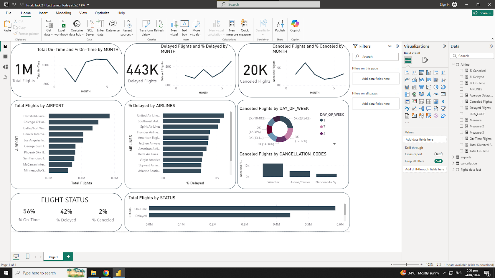
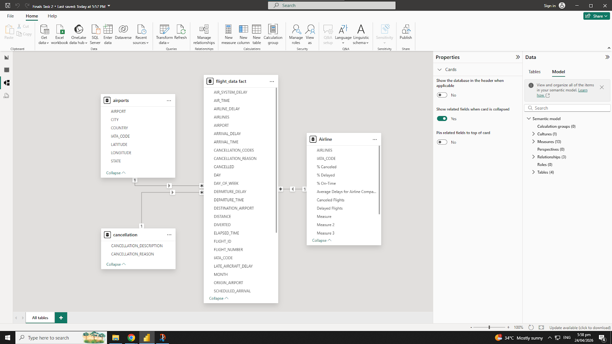

Finals Essay Task 01. Data Analytics and SQL
Description of the Task
This task focuses on evaluating modern data career frameworks and the strategic role of SQL within business environments. It prepares students to transition from a technical mindset to a business-driven analyst capable of delivering actionable insights.
Screenshots

